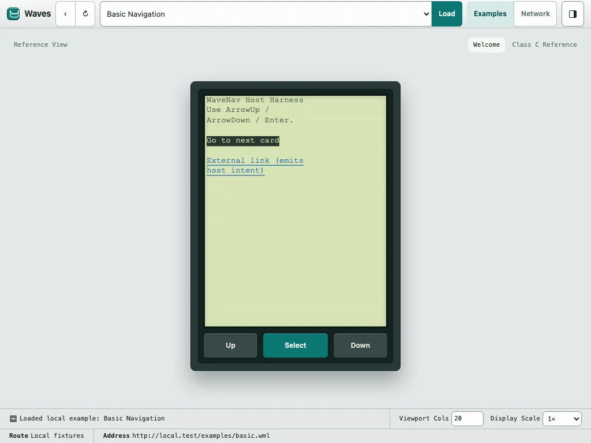
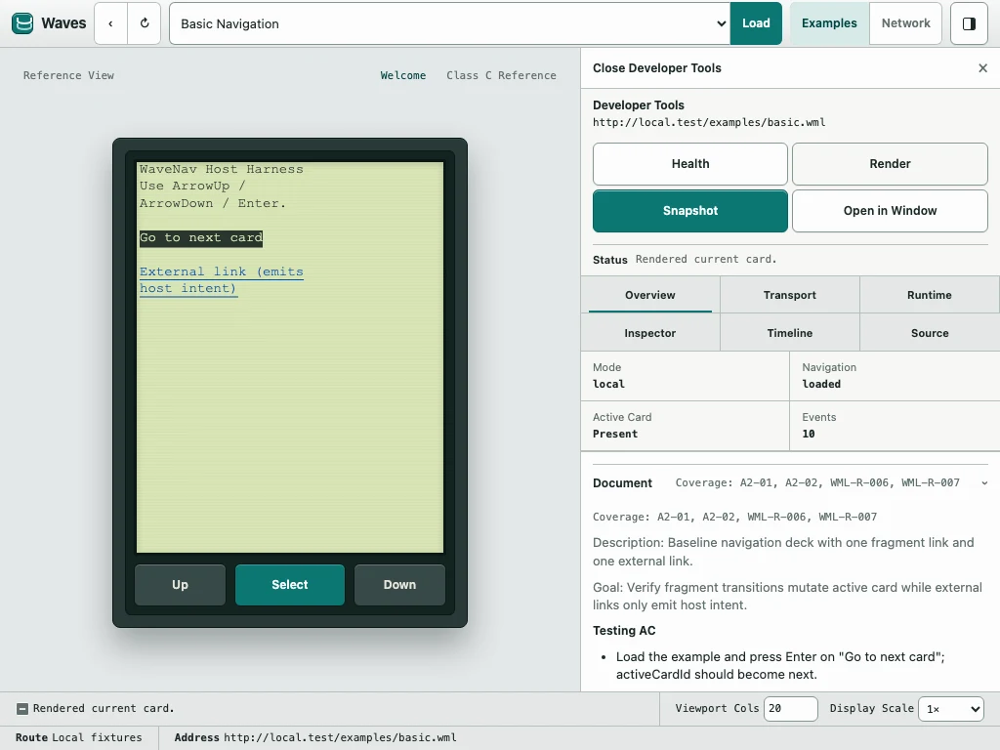

WAP/WML browser · desktop pre-release path
The early mobile web,
back on
the air.
Waves is a practical desktop browser for exploring, testing, and improving the WAP/WML stack—without vague emulation or throwaway demos. It is moving toward an initial pre-release; the desktop build is not available yet.
- Real runtime
- Navigation, forms, timers, and scripts come from the engine—not a mock UI.
- Native workbench
- Run local examples, browse through the native network path, and inspect one session.
Capture01
Current development buildCanvas handset & native host
Current main

01 / Why it exists
Old protocol.
Serious tooling.
Most WAP tooling is either inaccurate, unfinished, or painful to work with.
Waves is the practical middle ground: close enough to the original platform to be worth trusting, but modern enough to support debugging, iteration, and real development work.
- Load local examples and live decks in one tool.
- Inspect runtime state and transport behavior while you browse.
02 / The system
Layered on purpose.
Each part of the stack does one job, with the browser sitting at the top—not swallowing the layers below.
- 01
Gateway
Kannel + environment
Compatibility testing at the edge of the stack.
- 02
Transport
Lowband
WBXML, WSP/WTP behavior, and the fetch rules beneath the browser.
- 03
Engine
WaveNav
A Rust/WASM runtime for parsing WML, navigation, and card rendering.
- 04
Browser
Waves
The desktop host that turns the layers into a usable browser.
03 / In practice
A browser,
not just a harness.
- 01
Browse
Open bundled examples and follow HTTP, WAP gateway, and linked-deck paths.
- 02
Interact
Drive focus, text/select editing, forms, timers, and softkey-style actions.
- 03
Inspect
Use current Developer Tools while the broader WAP Inspector remains release work.
- 04
Repeat
Run deterministic stories and parity-critical checks against the real runtime.

04 / Shipping now
Core flows, turned into day-to-day tools.
Open a deck, interact, inspect, and continue in one stable loop—even when the network slows down or fails.
- 01Open deck
- 02Interact
- 03Inspect
- 04Continue
- 01
Session
Faster navigation loops
Back, history, and follow-link behavior stay stable while you iterate.
Follow a link and continue without restarting the browsing loop.
- 02
Diagnostics
Actionable runtime detail
Transport state, runtime snapshots, and timelines stay visible in the browser.
Understand why a transition happened without attaching extra tooling.
- 03
Sources
Local and live parity
Move between local examples and live WML pages with the same browser shell.
Keep one input model and inspection workflow across both sources.
- 04
Recovery
Explicit degraded states
Loading and network failures keep the current browser context visible.
Inspect what happened and continue instead of landing on a frozen shell.
05 / Release path
Moving toward the first pre-release.
Waves is being prepared as a native desktop WAP/WML testing workbench. The release path keeps current behavior, initial pre-release intent, and later v1 direction separate.
- 01
Current main
A real browser foundation
Local examples, native network browsing, Canvas handset rendering, focused input, safe application state, deterministic stories, and bounded engine debug recording are in the repository.
Development behavior—not a packaged desktop release.
- 02
Initial pre-release
A bounded daily testing path
Recovery, Home, basic Favorites, state and settings integration, native commands, sanitized support diagnostics, accessibility, packaging, signing, and install guidance form the intended first cut.
There is no public download or announced release date yet.
- 03
Later v1
Deeper inspection and continuity
The broader WAP Inspector, searchable history, Favorites import/export, stronger redaction controls, semantic accessibility support, replay, frame export, network presets, and evidence-backed profiles remain later direction.
Planned follow-on work, subject to implementation evidence.
Preview what is available
Try the simulator.
Follow the release.
The web simulator runs the real WaveNav WASM engine with bundled examples and no network access. It is a preview of current behavior, not the desktop pre-release.